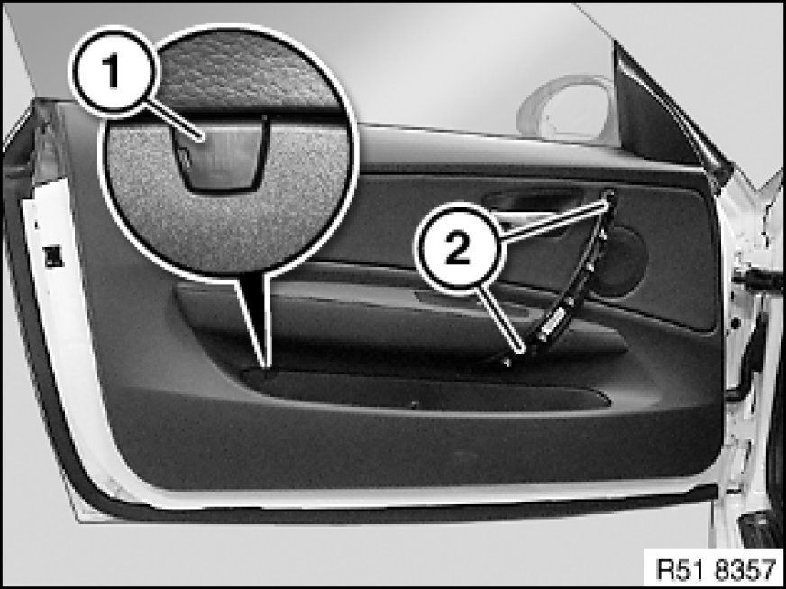
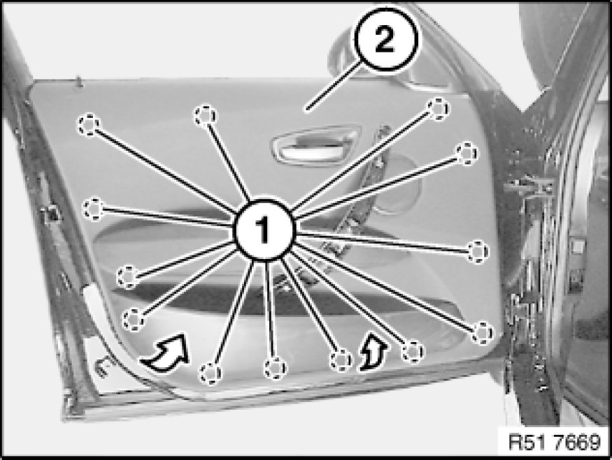
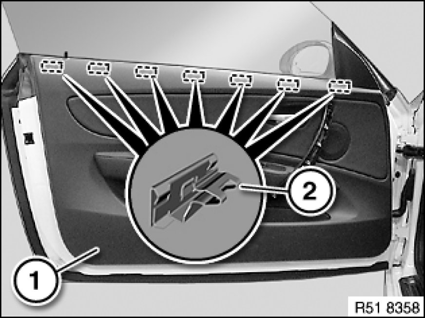
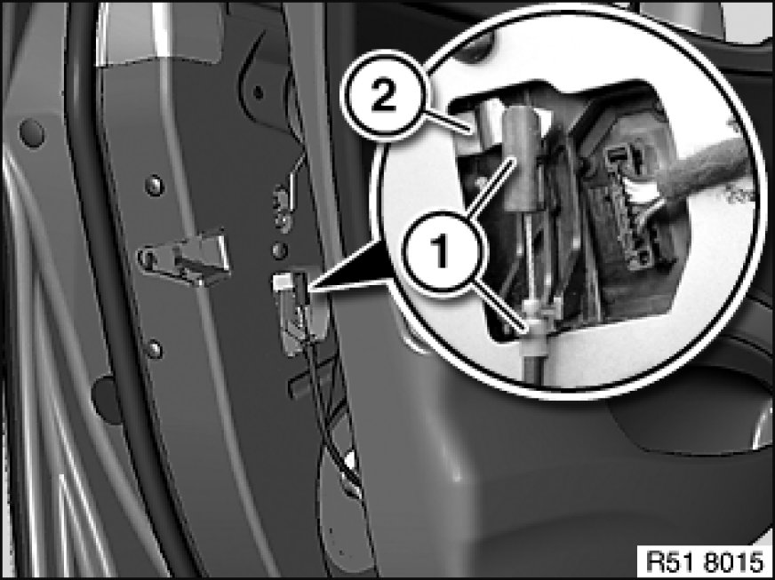
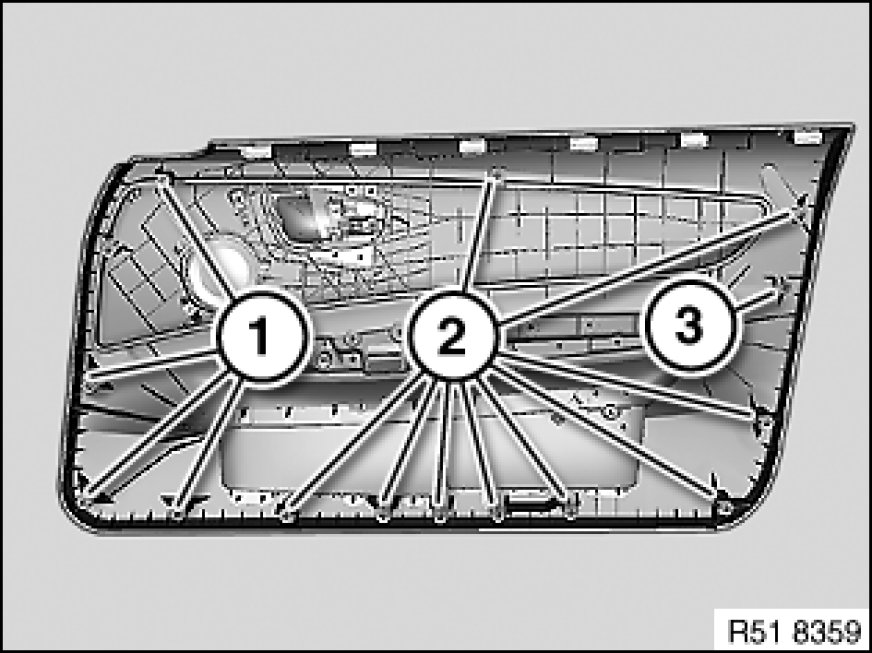

Removing and Installing (Replacing) Front Left or Right Door Trim Panel
51 41 000 - Removing and installing (replacing) front left or right door trim panel

Special tools required:

Important!
Risk of damage!
When working on trim panel components, make sure that the sensitive surfaces are not scratched or damaged.

Necessary preliminary tasks:
- Remove cover on door handle Removing and Installing or Replacing Cover on Door Handle, Front Left or Right
Driver's side:
- Remove toggle switch
Passenger side:
- Remove switch for power window Service and Repair

Lever out cover (1) and release screw underneath.
Release screws (2).
Tightening torque 51 41 1AZ Specifications.

Important!
Risk of damage!
Do not pull door trim panel by map pocket.
Unclip clips (1) for door trim panel (2) with special tool 00 9 317.
Note:
Start by unclipping door trim panel (2) at bottom.

Carefully unclip door trim panel (1) at top from retainers (2).

Unhook Bowden cable (1) from door lock (2).
Disconnect all plug connections and remove door trim panel.

Installation Note:
If necessary, replace faulty clips (1, 2 and 3).
Make sure clips (1, 2 and 3) are in correct installation position.
1 - Grey clip
2 - White clip
3 - Beige clip

Installation Note:
After assembling the door trim panel proceed as follows:
- Open door window.
- Lock with vehicle key.
- Check for ease-of-movement on retaining button linkage
- If necessary, align linkages
Replacement:
- Modify speaker
- Modify speaker cover Replacing Speaker Cover on Left or Right Door Trim Panel
- Modify inside door opener 51 21 225 Removing and Installing or Replacing Inside Door Opener In Left or Right Front Door